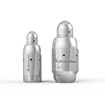
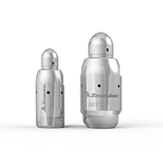
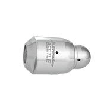
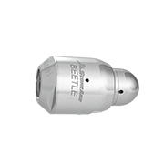

 

Beetle
The same powerful features that make Badger tools ideal for unplugging, cleaning and polishing pipes have been packed into the smallest rotary tools ever engineered — the Beetle BT18 and BT12.
The small diameter and short length of the Beetle models make them ideal for cleaning process piping, drain lines, u-tube bundles and other small ID tubes with bends and elbows that may have been inaccessible in the past.
- Clean raduised conduit with internal diameters as small as 5/8 in. (16 mm). See Tool Talk for radius chart.
- Patented liquid bearing design means no bearings, seals or lubricants to replace
- Stainless steel construction for extreme durability and longevity
- Efficiently remove removing scale, carbons and polymers
| Tool Family | Beetle | |
|---|---|---|
| Tool Model | BT12 | |
| Tube ID Range | 0.60–1.0 in. | 15–25 mm |
| Pressure Range | 8k–22k psi | 550–1500 bar |
| Flow Range | 5–8.5 gpm | 19–32 l/min |
| Flow Coefficient | 0.25 Cv | |
| Pulling Force | 9.0 lb @ 15k psi | 4.1 kg @ 1000 bar |
| Inlet Connection | 1/16 NPT, M7, 1/4-28 LH/RH | |
| Diameter | 0.5 in. | 13 mm |
| Length | 1.3 in. | 32 mm |
| Maximum Water Temp. | 250 °F | 120 °C |
| Tool Family | Beetle | |
|---|---|---|
| Tool Model | BT18 | |
| Tube ID Range | 0.90–1.3 in. | 15–33 mm |
| Pressure Range | 8k–22k psi | 550–1500 bar |
| Flow Range | 7-11 gpm | 26–42 l/min |
| Flow Coefficient | 0.27 Cv | |
| Pulling Force | 10.5 lb @ 15k psi | 4.7 kg @ 1000 bar |
| Inlet Connection | 1/16 NPT, 1/8 NPT, 1/8 BSPP, 1/4-28 LH/RH, 3/8-28 LH/RH | |
| Diameter | 0.7 in. | 17.5 mm |
| Length | 1.5 in. | 39 mm |
| Maximum Water Temp. | 250 °F | 120 °C |
| Tool Family | Beetle | |
|---|---|---|
| Tool Model | BT25 | |
| Tube ID Range | 1.2–3.0 in. | 30-76 mm |
| Pressure Range | 8k–22k psi | 550–1500 bar |
| Flow Range | 12-20 gpm | 45–76 l/min |
| Flow Coefficient | 0.45 Cv | |
| Pulling Force | 12 lb @ 15k psi | 5.5 kg @ 1000 bar |
| Inlet Connection | 1/8 NPT, 1/4 NPT, 1/4 BSPP, 3/8-28 LH/RH, 9/16-18 LH/RH | |
| Diameter | 1.0 in. | 25.4 mm |
| Length | 1.9 in. | 47.5 mm |
| Maximum Water Temp. | 250 °F | 120 °C |
Our expert staff is available Monday through Friday 8AM - 5PM MST to answer questions and offer advice on your toughest cleaning applications.